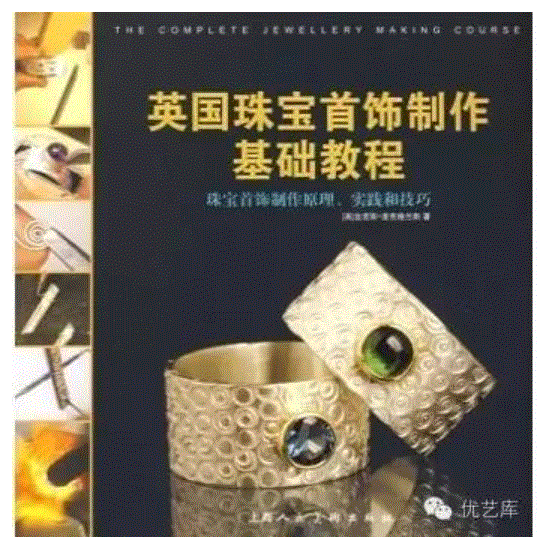
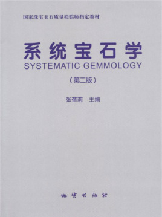
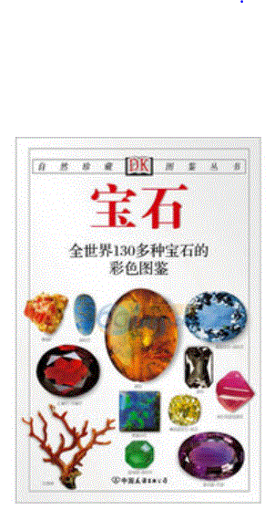

| 书名 | 内容介绍 | 购买 |
|---|---|---|
|  | 全面系统地阐述了天然宝玉石的宝石学特征，重点叙述了50余种常见宝玉石和80余种稀少宝石的物理性质、晶体结构、化学成分及鉴定方法；介绍了天然宝石的人工优化方法及其鉴别特征、合成宝石和人造宝石的生产原理、方法及其鉴定。 | 购买 |
|  |
《英国珠宝首饰制作基础教程》是一本讲述珠宝首饰设计和制作的完全教程，分步骤地指导读者进行学习，让读者学会怎样将创意转变为一个可实施的设计项目并最终成为一件可以佩戴的首饰。学习如何使用工具和设备，如何进行安全操作，如何创建自己的灵感档案，如何选择合适的材料来实现自己的创意，怎样加工那些非常贵重或较为贵重的宝石以及各种各样的金属和珠子。 |
购买 |
|  | 书中介绍了宝石的概念、形成、分布、天然特性和人们对它的加工与仿制。附有各种彩图来解说天然宝石与人造宝石的颜色变化与差异，书末的名词解释则有助于读者理解书中的专有名词。 | 购买 |